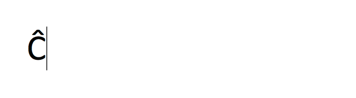

Selected Answer:
The correct answer is Ĉielarko.
Did you get it right?
Probably not.
The answers were in Esperanto, an international universal language created in the 19th century. If you don’t know Esperanto, you probably just guessed.
Although not the best strategy, anybody who has taken a multiple choice test will know that just because you made a guess doesn’t mean you got the question wrong.
As there are 4 possible answers, we have a ¼ chance of a correct guess, or a probability of 0.25.
Let’s try one more:
Selected Answer:
Did you get it right?
Probably!
There is still a guess probability of 0.25, so what happened?
You learned.
Somebody inputs the correct answer.
How do we know for sure if they are guessing, or really “know” it?
Answer: We don’t.
We cannot know for sure. Bayesian Knowledge Tracing (BKT) Algorithms can help us predict what people know.
One piece of information we do have is the guess probability, the probability of getting the answer correct on a guess. We will call this probability P(guess).
This is the first parameter of the Bayesian Knowledge Tracing Algorithm.
Do you remember the value of P(guess) from our questions? You can drag the slider to explore different options:
Number of Potential Answers:
Because there were 4 possible answers to each of the multiple choice questions, and only 1 was correct, P(guess) was equal to 0.25.
Let us consider the situation where a user inputs the correct answer to a multiple choice question. P(guess) alone cannot tell us whether the user knows the correct answer, or if it is a guess. P(guess) is just the probability of getting the correct answer with no prior knowledge.
We answered two questions. We will call these questions N and N+1.
Was there a difference between the two questions?
Yes!
We came into the second question with prior knowledge about Esperanto. Specifically, we had learned the word Ĉielarko (rainbow). This allowed us to pick the correct answer. We call the probability that the user has prior knowledge P(known).
For the first question N, P(known) was likely 0 (0%).
For the second question N+1, P(known) was around 1 (100%).
P(learning) is the probability that a user will gain knowledge after a learning opportunity (after attempting a question N). In this case, P(learning) is also close to 1.
By answering the first question, the user is likely to gain mastery over the word Ĉielarko.
Number of Syllables in Word:
There is one other situation to consider. It is possible to know a match and still choose incorrectly, potentially due to rushing, a mispelled word, or misplaced click. This is called a “slip”. The probability of a slip P(slip) is the final parameter in the Bayesian Knowledge Tracing algorithm.
A high value of P(slip) (ex: P(slip)=.6)
indicates a user who knows the correct answer to a question is
more likely to get the question incorrect than correct. A low
value of P(slip) (ex: P(slip)=.02)
indicates that a user who knows the correct answer is almost certain to get
the question correct.

Every time the user answers a question, our algorithm calculates P(Mastered),
the probability that the user has learned the skill they are working on, using the parameters discussed above.
The formula for P(Mastered) depends on whether the users' response was correct [1].
For the following question N+1, P(Mastered) is converted into the new value of P(known).
This is calculated using P(learning). P(Mastered) is the passed value of either P(Mastered if Correct)
or P(Mastered if Incorrect) [1].
Once P(known) ≥ 0.95, we say the user has achieved mastery.
Now that you’ve had a chance to learn about the four parameters, here’s a tool that can help you explore the relationships between them and how exactly each influences the probability calculations underlying BKT.
Bayesian Knowledge Tracing Algorithms can be understood through the card game Memory. In memory, a deck of cards is spread out, face down. The goal is to match cards that are the same. Click two cards. See if you find a match.
Remember, P(Mastered) depends on whether the student answers correctly. This probability becomes the new value for P(known).
Play the Memory game below. See if you can achieve mastery!